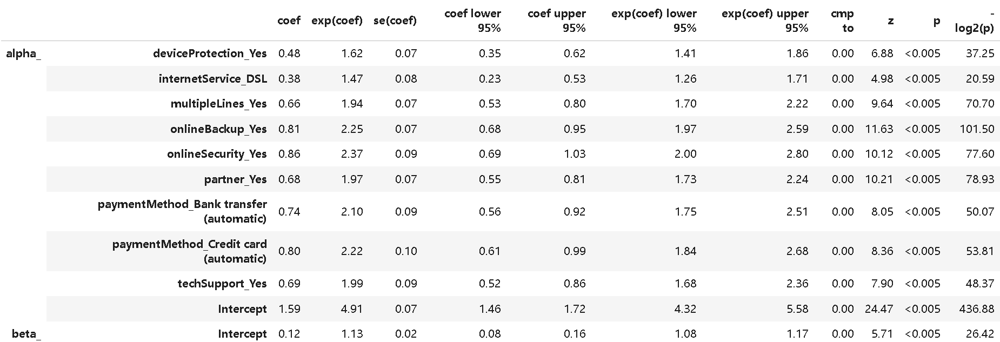

1. 数据工程与分布式预处理 PySpark
本项目使用 PySpark 构建了分布式数据管道，通过显式定义的 StructType 严格模式加载 IBM 原始数据集，确保 21 个字段的数据类型精确无误。
# PySpark 数据清洗与过滤核心逻辑
from pyspark.sql.types import StructType, StructField, StringType, DoubleType
# 定义严格 Schema 防止推断错误
schema = StructType([StructField("Churn", StringType(), True), ...])
df_spark = spark.read.schema(schema).csv("telco_data.csv")
# 转换目标变量并聚焦核心客群（按月付费+互联网服务）
df_pyspark = df_spark.withColumn("Churn_Numeric", when(col("Churn") == "Yes", 1).otherwise(0))
df_filtered = df_pyspark.filter((col("Contract") == "Month-to-month") & (col("InternetService") != "No"))
df_pandas = df_filtered.toPandas() # 对接 Lifelines 库
工程结论：
- 高精度： 显式模式定义消除了类型推断偏差；
- 精准聚焦： 过滤逻辑锁定了高流动性的核心客群，为生存分析提供了高质量的输入样本。
2. 总体留存趋势：Kaplan-Meier 估计 Non-Parametric
在不预设概率分布的前提下，通过对在网时长（Tenure）和流失状态（Churn）的拟合，描绘客户留存的生命线。

from lifelines import KaplanMeierFitter
kmf = KaplanMeierFitter().fit(df_pandas['tenure'], df_pandas['Churn_Numeric'])
print(f"中位数生存时间: {kmf.median_survival_time_}")
核心洞察：
- 关键阈值： 该客群的中位数生存时间为 34 个月，意味着一半的客户在入网不到 3 年内就会流失；
- 不确定性： 随着时间推移，生存概率曲线的置信区间变宽，提示长期留存预测的波动性增加。
3. 流失风险归因：Cox 比例风险模型 Semi-Parametric
通过对类别特征进行独热编码（One-Hot Encoding），利用 CoxPH 模型量化各项增值服务对流失风险的影响。

保护因素分析：
- 显著保护： 摘要显示所有纳入的服务特征风险比均小于 1，均起到留存保护作用；
- 核心拉力： 网络备份 (Online Backup) 使流失风险降低约 54%；技术支持 (Tech Support) 使流失风险降低约 47%。
4. 生命周期延长评估：AFT 模型 Parametric
利用 Log-Logistic 加速失效时间模型，直接计算各服务特征对客户预期寿命的加速因子（Acceleration Factor）。

时间延长效应：
- 倍数增益： 网络安全服务使预期寿命延长了 2.37 倍；网络备份延长了 2.25 倍；
- 支付效应： 采用自动扣款（Auto-pay）的客户，其在网时间也显著延长至 2 倍以上。
5. 商业价值落地：CLV 预测推演 NPV Calculation
结合 Cox 模型生成的留存概率曲线与财务贴现率（WACC），计算特定特征组合客户的净现值累加和。

典型客户画像价值（无家属、DSL、有技术支持）：
- 概率衰减： 第 1 个月存活率为 0.94，至第 13 个月降至 0.78；
- 价值量化： 经过 13 个月的生命周期，单客户贡献的累积终身价值（CLV）达到 312.56 美元。这为获客成本（CAC）的上限设定提供了精准的数据支撑。